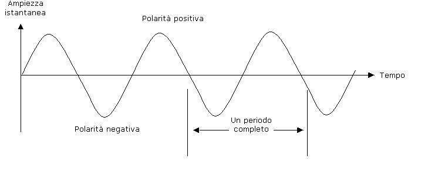
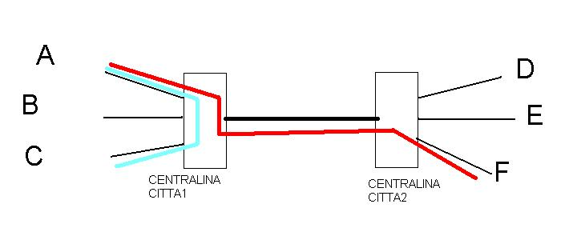
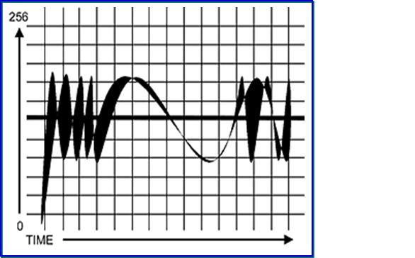
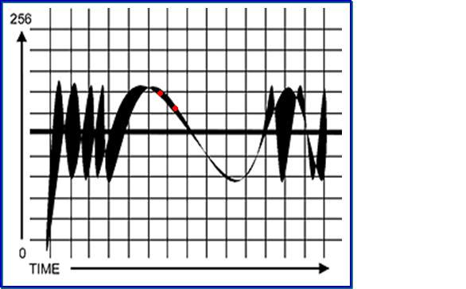

Torna alla pagina di Protocolli avanzati di rete
:: Protocolli avanzati di rete - Appunti del 2 Marzo ::
Ripasso della dispensa sui segnali (un particolare ringraziamento all'inventore del copia-incolla).
Un segnale è variabile nel tempo può quindi essere rappresentato graficamente per mostrare come si presenta come funzione del tempo. Il tempo viene rappresentato lungo l’asse orizzontale delle x. L’ampiezza del segnale in ogni istante di tempo, chiamata ampiezza istantanea, viene rappresentata lungo l’asse verticale delle y. L’ampiezza istantanea può rappresentare una qualunque grandezza fisica, come la pressione sonora, l’energia luminosa o il voltaggio elettrico.
La forma della rappresentazione grafica di un segnale è detta forma d’onda del segnale. Gli ingegneri usano dispositivi elettronici, chiamati oscilloscopi, per osservare le forme d’onda.
Una forma d’onda che ha una forma base che continua a ripetersi è detta segnale periodico.
La lunghezza temporale della forma base più breve di una forma d’onda periodica è detta periodo dell’onda e viene misurato in secondi. La velocità con cui un periodo completo, o forma base, si ripete è detta frequenza fondamentale della forma d’onda. La frequenza viene misurata in cicli al secondo, o hertz (abbreviato Hz). La frequenza fondamentale e il periodo di una forma d’onda hanno un rapporto reciproco. Se T è il periodo in secondi e F è la frequenza fondamentale in hertz, F = 1/T e T = 1/F.

TEOREMA DI FOURIER
Una qualsiasi onda periodica si può sempre esprimere come come combinazione linare di infinite ma numerabili funzioni sinusoidali
La telefonata analogica(1870)
Per poter essere trasmessa, la voce degli interlocutori deve essere trasformata in segnali. Per fare ciò bisogna applicare una TRASDUZIONE che avviene grazie all'effetto piezoelettrico dei granuli di carbone presenti nella cornetta.
Fin qui tutto ok, ma come posso collagare gli utenti tra di loro??
Dipende dal territorio in cui si deve costruire la rete telefonica. Va da se però che è impensabile collegare con cavi tutti gli itenti tra di loro. Devo usare delle linee condivise.
L'dea di BELL è stata quella di creare delle centrali di città. La centrale della città1 è collegata fisicamente a ciasun utente della citta1. La città2 è fisicamente collegata a ciascun utente della città2 e così via. Ovviamente questi tipo di configurazione er resa possibile dato il basso numero di utenti possessori di telefono (basti pensare che New York all'epoca contava solo 400 abbonati)
Ogni centrale di città poi era collegata con un grafo completo alle altre centraline di città di modo da poter metteree in comunicazione tutti gli abbonati.
Quando un utente voleva chiamare un altro si collegava alla centralina della sua città e chiedeva di parlare con la tal persona. Se la persona era appartenente della stessa città la ragazza della centrale collegava lo spinotto in modo da creare un SUBSCIBER LOOP (percorso fisico tra mittente e destinatario della stessa città); se il destinatario della chiamata era di un'altraa città la ragazza introduceva lo spinotto per creare una linea fisica dal mittente alla centralina della città in questione che a sua volta creava una subscibe loop per contatta re il suo cittadino.
Quindi con i "pochi" cavi che c'erano si potevano contattare tutti gli utenti perchè ogni volta venivano create delle linee fisiche tra mittente e destinatario. La creazione dinamica e temporanea di questi percorsi è denominato CIRCUIT SWITCHING.
FDM (multiplexing in freuenza)
La ragazza del centralino che infila lo spinotto crea come appena detto un percorso fisico sul quale viene trasmesso il segnale della voce. Per far avvenire la trasmissione è necessaria la resenza di tre portanti: una per la voce che viaggia da A a B, una che viaggia da B verso A e un portante chiamata di SIGNALY.Tale configurazione viene chimata forchetta telefonica.\\ Su questa portante viaggiano pacchetti contenenti comunicazioni di servizio come
- BUILDERING(costruzione della telefonata e conteggio scatti per calcolo bolletta)
- MEETING (collegamento tra i due cittadini)

Percorso AZZURRO: esempio si SUBSCIBER LOOP, Percorso ROSSO: esempio di percorso tra due abbonati di città diverse: operazione di CIRCUIT SWITCHING
Gli hacker del tempo si davano da fare per modificare i pacchetti della SIGNALY di modo da modificare il messaggio di meetering per non pagare la telefonata.:)
!!!La telefonata digitale
La telefonia digitale si basa sull'idea di convertire la forma 'onda della voce trasdotta in un flusso di bit.; bisogna quindi CAMPIONARE il segnale.Per la voce basta un convertitore analogico-digitale a 8 bit e catturare 8 mila campioni al secondo (8kHz).
Se consideriamo l'esempio avremo 8 bande di quantizzazione.
Per campionare l'onda devo rilevare i valori dll'onda in determinati momenti e dai numeri ottenuti ricavo la sequenza di bit
Un canale di telefonia digitale richiede quindi 64 Kbps

'''
La figura prende come esempio 256 valori (righe orizzontali).
Per campionare la voce prendo i valori dell'onda in determinati momenti. Ogni banda di quantizzazione corrisponde ad un valore. Ne va da se che i valori che cadono in una banda di quantizzazione sono molti e talvolta diversi come nell'esempio sotto.

'''
Possiamo quindi affermare che il campionamento è anche una forma di approssimazione perchè in questa fase i valori anche abbastanza diversi tra di loro vengono codificati allo stesso modo. (il che è abbastanza caccoso)
Questo fenomeno viene definito RUMORE.
Definendo Δ come la distanza tra due bande di quantizzazione, definiamo l'errore di trasmissione provocato dal rumore come
ERRORE=Δ/2
Se voglio diminuire il rumore devo diminuire Δ e quindi avere più bit in uscita.
Tanto più il segnale è variabile nel tempo, tanto più piccolo sono gli intervalli di tempo in cui prendo i valori da campionare.
In assenza di rumore la frequenza di camponameto minima per ricostruire il segnale è
fc>=2fm
dove
fc è la frequenza di campionamento
fm è la frequenza dell'armonica più alta
Torna alla pagina di Protocolli avanzati di rete